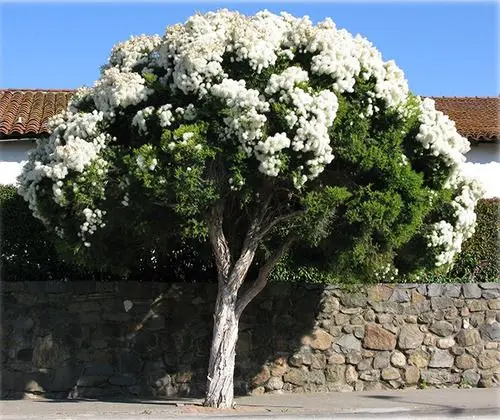

Melaleuca
Melaleuca alternifolia

Informações Botânicas
Nome Científico:
Melaleuca alternifolia
Família:
Myrtaceae
Descrição:
A melaleuca é uma árvore nativa da Austrália, conhecida por suas propriedades medicinais e aromáticas. Possui folhas lineares e flores pequenas em espigas cilíndricas. É muito apreciada por suas propriedades antissépticas e por atrair abelhas e outros polinizadores. A planta se adapta bem ao clima brasileiro e é resistente à seca.
Localização no Jardim:
Canteiro principal próximo à entrada da escola, lado direito do portão principal.
Características Especiais:
- Propriedades antissépticas e medicinais
- Aroma característico das folhas
- Atrai polinizadores naturais
- Resistente à seca
- Crescimento moderado